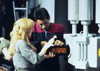
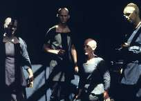
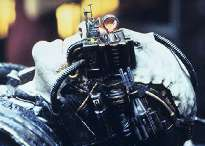
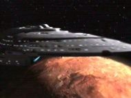

|
MANCHETE
DO EPISDIO
Os Borgs finalmente acham a Voyager
e do as caras no quadrante Delta
Episdio
anterior | Prximo
episdio
Sinopse:
Data Estelar: 50614.2.
 Retornando
de uma misso na Expanso Nekrit em uma nave auxiliar, Chakotay e
a alferes Kaplan detectam um pedido de socorro com sinal da
Federao vindo de um planeta. Eles lanam uma bia para
informar a sua posio Voyager e aterrissam, sendo atacados por
um grupo de humanides hostis assim que chegam superfcie.
Kaplan morre e Chakotay, ferido, salvo por outro grupo, liderado
por uma mulher chamada Riley. Ela explica que faz parte de uma
cooperativa de diferentes espcies que foram abduzidas por
aliengenas e deixadas l prpria sorte. Nem todos eles, no
entanto, so amigveis.
Na Voyager, a tripulao detecta um cubo
Borg deriva no espao. Quando o infiltram, encontram 1.100
drones mortos. Uma investigao posterior revela que a nave deixou
de operar h cerca de cinco anos.
 No
planeta, Chakotay fica chocado ao descobrir que Riley e os outros
so todos Borgs -- ou, pelos menos, foram. No se tratou de
abduo; eles tinham sido assimilados pela Coletividade. Mas,
cinco anos atrs, o cubo em que estavam foi avariado por uma
tempestade eletrocintica que rompeu o elo dos drones com os Borgs.
Os que sobreviveram se instalaram no planeta, porm comearam logo
a lutar por comida e suprimentos.
Riley pede que Chakotay a ajude. Mas, por ora,
o comandante que precisa de auxlio. Sua nica opo ligar
temporariamente sua conscincia s daqueles que formam uma pequena
coletividade, com o intuito de curar. Mais tarde, quase recuperado
dos ferimentos, Chakotay sente-se mais prximo daquelas pessoas, em
especial Riley.
 Rastreando
a bia lanada por seu primeiro-oficial, a Voyager consegue
localiz-lo. Ele transportado com Riley, que pede capit
ajuda para reativar o gerador no cubo, a fim de restabelecer o elo
neural entre os antigos drones. Riley cr que isso terminaria as
lutas e permitiria que todos trabalhassem em uma verdadeira
comunidade. Janeway no concede o pedido, levando em conta o risco
que tal ao representaria. Riley retorna ao planeta, onde usa da
conscincia compartilhada para forar a cooperao de Chakotay.
Ele pega uma nave auxiliar e faz tudo o que lhe pedido. Assim que
a ligao restabelecida, a nova coletividade destri o cubo e
libera Chakotay, agradecendo-lhe e ao resto da tripulao pela
ajuda forada. Rastreando
a bia lanada por seu primeiro-oficial, a Voyager consegue
localiz-lo. Ele transportado com Riley, que pede capit
ajuda para reativar o gerador no cubo, a fim de restabelecer o elo
neural entre os antigos drones. Riley cr que isso terminaria as
lutas e permitiria que todos trabalhassem em uma verdadeira
comunidade. Janeway no concede o pedido, levando em conta o risco
que tal ao representaria. Riley retorna ao planeta, onde usa da
conscincia compartilhada para forar a cooperao de Chakotay.
Ele pega uma nave auxiliar e faz tudo o que lhe pedido. Assim que
a ligao restabelecida, a nova coletividade destri o cubo e
libera Chakotay, agradecendo-lhe e ao resto da tripulao pela
ajuda forada.
Comentrios:
Os Borgs fazem uma impressionante
primeira apario em Voyager. Embora o episdio costume
ser subestimado por muitos fs -- que esperavam mais ao na
histria --, a direo e roteiro so impecveis. "Unity"
vem para calar aqueles que no acreditam na capacidade de a srie
render tramas boas e originais.
 A
expectativa do pblico no passou desapercebida. Todos os
envolvidos na produo sabiam da responsabilidade que estavam
assumindo, pois assim que foram introduzidos na segunda temporada de
A Nova Gerao, os Borgs se tornaram os viles mais
populares de Jornada. Seu aparecimento em Voyager era
apenas questo de tempo. Afinal, j havia sido estabelecido que
eles eram nativos do quadrante Delta.
O diferencial do episdio que a
Coletividade vista por um outro ngulo. Normalmente, no
possvel lidar com os Borgs usando a boa e velha diplomacia. No
d para coexistir ou discutir com eles. O negcio traar um
curso na direo oposta, e em dobra mxima. Aqui, podemos no
apenas entender por que agem do jeito que agem, mas at concordar
com a sua filosofia -- o que torna a histria to perturbadora.
Riley muito persuasiva. Mas ela convence por sua perspiccia,
inteligncia e lucidez. Ela tem boa f e oferece argumentos fortes
para querer restabelecer a ligao neural entre os habitantes do
planeta.
 "Uma
famlia harmoniosa". como Riley descreve a Coletividade.
Isto no deixa de ser verdade. Como em uma colmia, em que h a
cooperao mtua entre indivduos, entre os Borgs no h
diferenas, disputas, preconceitos, dio, discordncia. Todos
vivem e trabalham por um propsito comum. S h um porm nessa
histria. Conforme Janeway comenta, essa famlia nasceu da
assimilao violenta de povos inocentes. O papel do indivduo
desaparece e no h opinies pessoais ou escolhas. "Uma
famlia harmoniosa". como Riley descreve a Coletividade.
Isto no deixa de ser verdade. Como em uma colmia, em que h a
cooperao mtua entre indivduos, entre os Borgs no h
diferenas, disputas, preconceitos, dio, discordncia. Todos
vivem e trabalham por um propsito comum. S h um porm nessa
histria. Conforme Janeway comenta, essa famlia nasceu da
assimilao violenta de povos inocentes. O papel do indivduo
desaparece e no h opinies pessoais ou escolhas.
A prpria cooperativa mostra como
pensar em coletividade pode ser uma faca de dois gumes. Os membros,
com seus nobres ideais, no hesitaram em usar Chakotay como um
marionete quando lhes parecia importante. Nesse ponto, eles no
so melhores do que os Borgs. Certo, manipular um indivduo para o
"bem maior" nem se compara destruio em massa de
toda uma espcie. Mas houve uma srie de enganaes,
meias-verdades e idias pretenciosas.
 Quem
Riley para determinar o destino dos outros 80 mil habitantes
daquele planeta? Na verdade, o episdio quer que gostemos daqueles
ex-Borgs. Eles salvam a vida de Chakotay e destroem o cubo depois
que conseguem o que queriam. Mas em que a ao deles difere da dos
Borgs? Ao final da histria, eles so a prpria Coletividade.
At quando seus ideais duraro, isso nunca saberemos. Quem
Riley para determinar o destino dos outros 80 mil habitantes
daquele planeta? Na verdade, o episdio quer que gostemos daqueles
ex-Borgs. Eles salvam a vida de Chakotay e destroem o cubo depois
que conseguem o que queriam. Mas em que a ao deles difere da dos
Borgs? Ao final da histria, eles so a prpria Coletividade.
At quando seus ideais duraro, isso nunca saberemos.
A direo de McNeill enfoca muito o
lado humano dos personagens, e talvez por isso seja to notvel. A
histria no de Chakotay, embora ele esteja presente o tempo
todo. Mas temos novas amostras do relacionamento entre
primeiro-oficial e capit. Janeway quase parece mostrar um olhar de
cimes na sala de reunies. Ela procura esclarecer o que ele est
sentindo. Ela sabe que Chakotay e Riley esto prximos, mas quer
entender qual a natureza dessa proximidade.
 Os
outros personagens so sub-utilizados, mas, reunidos em algumas
cenas, enriquecem bastante o episdio. Dois momentos em especial
devem ser lembrados. O primeiro a tenso quando B'Elanna comenta
que pode haver um inimigo ainda mais poderoso do que os Borgs.
Talvez seja a falta desse medo nos outros episdios que tire o
realismo da srie. O que poderia ser mais forte que os Borgs? Para
a tripulao, uma pergunta que nem merece resposta; para a capit,
talvez algum poderoso o suficiente para mand-los para casa, ou
ao menos poup-los de possveis confrontos com a Coletividade.
A outra cena a autpsia do cadver
na enfermaria, com o humor do Doutor, o susto no olhar de B'Elanna e
a perplexidade de Kes. So momentos dramticos. Os
outros personagens so sub-utilizados, mas, reunidos em algumas
cenas, enriquecem bastante o episdio. Dois momentos em especial
devem ser lembrados. O primeiro a tenso quando B'Elanna comenta
que pode haver um inimigo ainda mais poderoso do que os Borgs.
Talvez seja a falta desse medo nos outros episdios que tire o
realismo da srie. O que poderia ser mais forte que os Borgs? Para
a tripulao, uma pergunta que nem merece resposta; para a capit,
talvez algum poderoso o suficiente para mand-los para casa, ou
ao menos poup-los de possveis confrontos com a Coletividade.
A outra cena a autpsia do cadver
na enfermaria, com o humor do Doutor, o susto no olhar de B'Elanna e
a perplexidade de Kes. So momentos dramticos.
 Alguns
outros interessantes sobre a histria... Como Riley foi assimilada
em Wolf 359 se aquele cubo -- o nico no quadrante Alfa -- nunca
retornou para casa? Mesmo que tivesse voltado, como havia Klingons,
Cardassianos e Romulanos a bordo? Foi meio forado. Outra coisa
estranha o nmero de habitantes no planeta. Teoricamente eles
todos vieram do cubo... mas 80 mil indivduos? E por que no
passou pela cabea de ningum na Voyager recuperar alguma
tecnologia na nave deriva? Outra crtica a morte totalmente
desnecessria da alferes Kaplan, e a perda de mais uma nave
auxiliar. Alguns
outros interessantes sobre a histria... Como Riley foi assimilada
em Wolf 359 se aquele cubo -- o nico no quadrante Alfa -- nunca
retornou para casa? Mesmo que tivesse voltado, como havia Klingons,
Cardassianos e Romulanos a bordo? Foi meio forado. Outra coisa
estranha o nmero de habitantes no planeta. Teoricamente eles
todos vieram do cubo... mas 80 mil indivduos? E por que no
passou pela cabea de ningum na Voyager recuperar alguma
tecnologia na nave deriva? Outra crtica a morte totalmente
desnecessria da alferes Kaplan, e a perda de mais uma nave
auxiliar.
 Em
todo caso, foi interessante rever as cenas da batalha de Wolf 359,
assim como acompanhar a evoluo na qualidade dos efeitos visuais
da srie. A Voyager (verso CGI, gerada por computador) est
muito mais manobrvel e esguia do que antes. Daqui para frente, ela
vai fazer coisas que nunca fez, e se parecer mais com um caa do
que com uma nave estelar. medida que caminhamos para o final da
terceira temporada e entramos na quarta, fica muito claro que Voyager
quer cada vez mais se tornar uma srie de ao.
Citaes:
Chakotay - "You're saying we
are lost, Ensign?"
("Voc est dizendo que estamos perdidos, alferes?")
Kaplan - "That depends what you mean by 'lost', sir."
("Depende do que quer dizer com 'perdidos', senhor.")
Riley - "It's not exactly a
United Federation around here, if you know what I mean."
("No somos uma Federao Unida por aqui, se entende o
que quero dizer.")
Paris - "You know, they
oughta rename this place the 'Negative Expanse'. We haven't run
across anything interesting for days."
("Sabe, eles deveriam renomear este lugar a 'Expanso
Negativa'. No vemos nada interessante h dias.")
Janeway - "If you're bored, Mr. Paris, I'm sure I can find
something else for you to do. The warp plasma filters are due for a
thorough cleaning."
("Se est entediado, sr. Paris, com certeza posso encontrar
alguma coisa para voc fazer. Os filtros do plasma de dobra
precisam de uma limpeza completa.")
Paris - "Now that you mentioned it, Captain, I find this
region of space a real navigational challenge."
("Agora que mencionou isso, capit, eu acho esta regio
do espao um verdadeiro desafio de navegao.")
B'Elanna - "It's like a ghost
ship."
("Parece uma nave fantasma.")
Harry - "But what caused the
shutdown in the first place?"
("Mas o que causou a desativao em primeiro
lugar?")
B'Elanna - "It could have been some kind of natural disaster,
or..."
("Poderia ter sido algum tipo de desastre natural,
ou...")
Harry - "Or what?"
("Ou o qu?")
B'Elanna - "Maybe the Borg were defeated by an enemy even more
powerful than they were."
("Talvez os Borgs tenham sido derrotados por um inimigo
ainda mais poderoso.")
Doutor - "I must say, there's
nothing like the vacuum of space for preserving a handsome corpse."
("Tenho que dizer que no h nada como o vcuo do
espao para preservar um belo cadver.")
Trivia:
 Quando Ken Biller percebeu que ia escrever o primeiro roteiro Borg
para Voyager, tentou encontrar um jeito novo e interessante
de olhar para a Coletividade. Como personagens, eles no so
to interessantes, porque s fazem uma coisa, disse. Eles
perseguem e consomem seus inimigos incansavelmente. Biller leu o
roteiro de "Primeiro Contato", que ainda no tinha
sido filmado, e ocorreu-lhe que os Borgs poderiam de alguma forma
perder essa caracterstica. De repente me veio a imagem da Torre
de Babel, comentou, essa comunidade incrivelmente complexa
tinha sido criada e se sua estrutura fosse abalada voc teria todas
essas pessoas falando em idiomas diferentes, incapazes de se
comunicar. Me ocorreu que um grupo de ex-Borgs seria uma comunidade
interessante a explorar.
Quando Ken Biller percebeu que ia escrever o primeiro roteiro Borg
para Voyager, tentou encontrar um jeito novo e interessante
de olhar para a Coletividade. Como personagens, eles no so
to interessantes, porque s fazem uma coisa, disse. Eles
perseguem e consomem seus inimigos incansavelmente. Biller leu o
roteiro de "Primeiro Contato", que ainda no tinha
sido filmado, e ocorreu-lhe que os Borgs poderiam de alguma forma
perder essa caracterstica. De repente me veio a imagem da Torre
de Babel, comentou, essa comunidade incrivelmente complexa
tinha sido criada e se sua estrutura fosse abalada voc teria todas
essas pessoas falando em idiomas diferentes, incapazes de se
comunicar. Me ocorreu que um grupo de ex-Borgs seria uma comunidade
interessante a explorar.
Biller tambm traou um paralelo com a quebra do bloco sovitico,
e o novo perodo de nostalgia com relao ao comunismo, pela
viso de Riley, a ex-Borg. Por que temos que pensar que ser um
Borg uma experincia to horrvel?, brincou Biller.
Talvez quando voc se torna um Borg, a experincia to
extraordinria quanto Riley diz.
O episdio foi dirigido por Robert Duncan McNeill (Tom Paris), que
teve vrios problemas tcnicos para solucionar. O cenrio Borg
no veio do filme. O set Borg, acredite ou no, era um corredor
com cerca de 1,20m de comprimento, curvado nas pontas, disse.
Era o menor set que eu j tinha visto na minha vida. No
tnhamos espao na plataforma para construir uma nave Borg grande,
porque os outros sets tinham ocupavam muito espao. Todo espao
que eles tiveram era de basicamente 1,20m em um semicrculo. Eu
disse Vocs no podem fazer isso. Os Borgs deveriam ter cubos
enormes. Acho que conseguimos esconder esse fato, e fazer parecer
como se eles estivessem num labirinto de tneis de verdade.
 McNeill tambm comentou sobre outras dificuldades de se filmar um
episdio com os Borgs. O que assusta sobre os Borgs, como
diretor, que eles gastam muito tempo na maquiagem. Voc pode se
prejudicar com problemas na maquiagem. Tnhamos um Borg com um
brao mecnico. Ele tinha um brao que tinha de se parecer com
tesouras, mas os cabos no estavam funcionando. De repente voc
olha no relgio e percebe que uma hora ou duas se passaram e voc
no fez nada porque estava brincando com os cabos. O brao veio do
filme. O figurino e maquiagem vieram do filme. Era o novo Borg, mais
assustador.
McNeill tambm comentou sobre outras dificuldades de se filmar um
episdio com os Borgs. O que assusta sobre os Borgs, como
diretor, que eles gastam muito tempo na maquiagem. Voc pode se
prejudicar com problemas na maquiagem. Tnhamos um Borg com um
brao mecnico. Ele tinha um brao que tinha de se parecer com
tesouras, mas os cabos no estavam funcionando. De repente voc
olha no relgio e percebe que uma hora ou duas se passaram e voc
no fez nada porque estava brincando com os cabos. O brao veio do
filme. O figurino e maquiagem vieram do filme. Era o novo Borg, mais
assustador.
Aqui fica estabelecido que Chakotay vegetariano, algo desmentido
no episdio "Timeless", do quinto ano, em que ele
e Harry comentam sobre o almoo: sanduches de salame...
Segundo Chakotay, a Voyager est a 67 anos de distncia de casa.
Mais uma nave auxiliar perdida em Unity.
A Expanso Nekrit, cenrio de Fair
Trade, novamente mencionada.
O ator Ivar Brogger (Orum) volta a aparecer em Voyager como
Barus, no episdio Natural Law, do ltimo ano.
A alferes Kaplan j havia aparecido em Futures
End. Ela morre em Unity, mas citada em Imperfection,
da ltima temporada da srie.
Ficha
tcnica:
Dirigido
por: Robert Duncan McNeill
Histria de: Kenneth Biller
Exibido em 12/02/1997
Produo: 059
Elenco:
Kate Mulgrew como
Kathryn Janeway
Robert Beltran como Chakotay
Roxann Biggs-Dawson como B'Elanna Torres
Robert Duncan McNeill como Tom Paris
Jennifer Lien como Kes
Ethan Phillips como Neelix
Robert Picardo como Doutor
Tim Russ como Tuvok
Garrett Wang como Harry Kim
Elenco convidado:
Lori Hallier como Riley Frazier
Ivar Brogger como Orum
Susan Patterson como alferes Kaplan
Episdio
anterior | Prximo
episdio
|